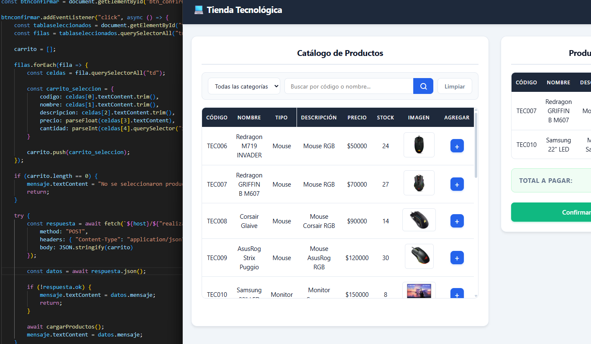

Hola, soy
Jose Zenteno
Programador Backend en formación
Soy estudiante de la Tecnicatura Universitaria en Programación en la UTN General Pacheco, con un fuerte interés y dedicación al desarrollo backend. Cuento con una sólida base técnica en C#, .NET, ASP.NET Core Web API, C++, APIs REST y bases de datos relacionales (SQL Server y MySQL), combinando proyectos académicos con un constante aprendizaje autodidacta.
En la universidad profundizo actualmente en Java y MySQL, mientras que de manera autodidacta fortalezco mi dominio en el ecosistema .NET (C#) y tecnologías web como JavaScript, HTML5 y CSS3, diseñando soluciones que priorizan la lógica de negocio, la arquitectura y las buenas prácticas.
Actualmente me encuentro en búsqueda activa de mi primer empleo IT como Desarrollador Backend Junior / Trainee, con disponibilidad para modalidades remota, híbrida o presencial (Buenos Aires / Zona Norte), motivado por aportar valor desde el primer día y continuar creciendo profesionalmente.
Descargar CV
¿Quién soy?

Soy José Zenteno, estudiante de la Tecnicatura Universitaria en Programación de la UTN Pacheco, enfocado en el desarrollo de software backend. Mi stack principal se centra en C#, .NET, ASP.NET Core Web API, C++ y SQL Server, complementado actualmente en la facultad con el aprendizaje de Java y MySQL, y conocimientos frontend en HTML5, CSS3 y JavaScript adquiridos de manera autodidacta.
Mi camino hacia la programación comenzó desde una perspectiva técnica distinta. Durante mis estudios secundarios me recibí de Técnico Electromecánico y me desempeñé laboralmente en esa disciplina, además de contar con experiencia en soporte técnico y mesa de ayuda (Helpdesk).
Con el tiempo, al utilizar mi propia computadora cada día más a fondo, descubrí que lo que verdaderamente me apasionaba no era solo usar aplicaciones o diagnosticar equipos, sino comprender cómo funcionan por dentro y construir mis propias soluciones de software. Esa curiosidad me impulsó a iniciar la carrera universitaria en programación, donde confirmé mi vocación por el desarrollo backend y la ingeniería de software.
Hoy disfruto resolver problemas complejos, diseñar APIs limpias y eficientes, modelar bases de datos y construir proyectos que generen impacto. Mi meta es incorporarme como Desarrollador Backend Junior / Trainee en un equipo dinámico donde pueda seguir aprendiendo, colaborar y aportar valor tangible.
Tecnologias

VS Code

Visual Studio
Eclipse IDE

GitHub

C++

C#

SQL Server

ASP.NET

HTML

CSS

JavaScript
ASP.NET Core API
Java
Android
MySQL

SQLite
Proyectos

Tienda Tecnológica
Plataforma de ventas con catálogo filtrable por nombre y categoría, carrito de compras con actualización dinámica de precios según cantidad, verificación de stock en tiempo real e historial de órdenes con control de estados.

Sistema de Gestión Clínica
Sistema para la gestión de turnos, pacientes, médicos e informes. Proyecto desarrollado con arquitectura en capas, lógica de negocio y persistencia relacional con SQL Server.

Sistema de Gestión de Transporte
Sistema de gestión de transporte desarrollado en C++, enfocado en la administración de vehículos, gestión de viajes y venta de pasajes mediante estructuras de datos eficientes.
Cursos y Certificaciones

Curso SQL
midudev
Formación en SQL y bases de datos, abordando consultas, JOIN, agregaciones, subconsultas, CTE, funciones de ventana y transacciones, con introducción a SQLite, MySQL, Node.js y NoSQL.
Ver certificado
Introducción a Python
DataCamp
Curso introductorio donde aprendí los fundamentos de Python, incluyendo variables, tipos de datos, listas, funciones, paquetes y conceptos básicos de NumPy para el manejo y análisis de datos.
Ver certificado
Python para Desarrolladores
DataCamp
Curso enfocado en los fundamentos de Python para el desarrollo, trabajando con tipos de datos, listas, diccionarios, conjuntos, tuplas, condicionales y bucles para crear programas y flujos de trabajo.
Ver certificado
Python para Desarrolladores (I)
DataCamp
Curso orientado a profundizar en Python, trabajando con funciones personalizadas, módulos, paquetes, pandas, funciones lambda y gestión de errores para desarrollar código más eficiente y robusto.
Ver certificado Mail
Mail LinkedIn
LinkedIn